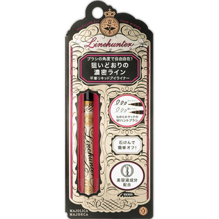
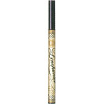

返回列表
产品名称：マジョリカ マジョルカ ラインハンター

資生堂 マジョリカ マジョルカ ラインハンター ＢＫ９９９
メーカー 資生堂
JANコード 4901872670956
商品の特徴
ブラシの角度で自由自在！
狙いどおりの濃密ライン
平筆リキッドアイライナー
なめらかタッチのWハントブラシ
太いライン 細いライン
石けんで簡単オフ！
美容液成分配合
成分・分量
-
用法及び用量
＜使用方法＞
●細い面で極細ライン、太い面でインパクトラインが描けます。
●かすれて描きにくく感じたら、容器を振らずに手の甲などで筆の根もとを軽く押さえるように筆先まで液をなじませ、筆先を整えてからお使いください。
●アイカラーの前にお使いいただくことをおすすめします。